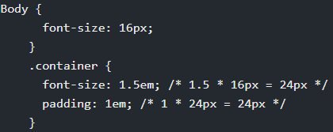
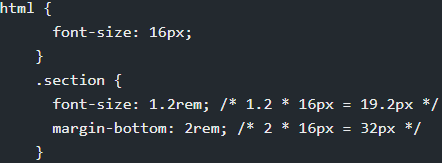
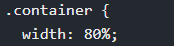
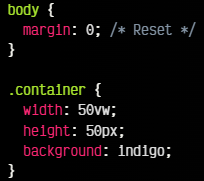
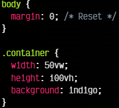
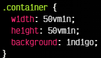
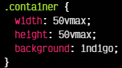
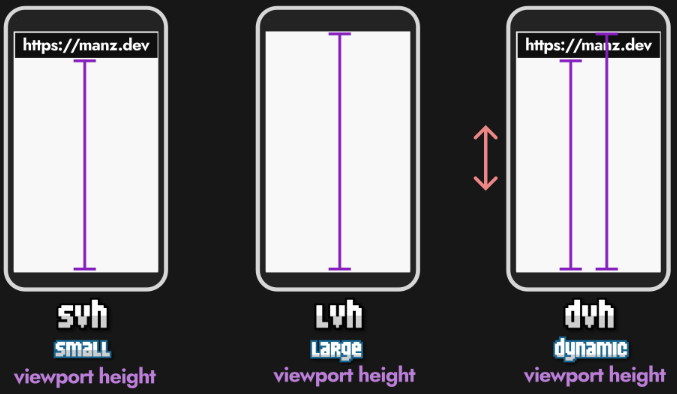

HTML adaptativo.
Erick Daniel Galaviz Saenz
Mat.238545
Bitacora 3: Unidades Responsivas

em
em se corresponde con la medida actual de la fuente en un contenedor. Es decir, si hemos
cambiado el tamaño de la fuente en un elemento y asignado font-size: 20px, entonces dentro
de ese contenedor, 1em será igual a 20px.

rem
rem es la unidad relativa al tamaño de la fuente, pero teniendo en cuenta el tamaño de la
fuente
del elemento HTML y no la heredada del elemento donde se encuentre ni la definida.

Porcentajes(%)
Permite establecer tamaños en relación con el contenedor padre. Por ejemplo, width: 50%;
hace que un elemento ocupe la mitad del ancho de su contenedor.

vw
viewport width se basa en el ancho de la ventana gráfica, útil para crear
diseños que se escalan con el
ancho de la pantalla.

vh
viewport height Similar a VW, pero basado en la altura de la ventana
gráfica.

vmin
Por su parte, la unidad vmin permite devolvernos la cantidad más pequeña entre el valor de
vw y de vh. De esta forma, si queremos el tamaño mínimo de estos dos, no tenemos que
controlarlo, simplemente utilizamos la unidad vmin.

vmax
De la misma forma, la unidad vmax permite hacer lo mismo, pero con el valor máximo. En el
mismo caso anterior, el valor máximo sería 800px, por lo que 50vmax sería 400px..

dvh, svh, lvh
dvh o dinamic viewport height es relativo al alto del navegador,
svh o small viewport height es igual a vh pero procura ser mas pequeño
lvh o large viewport height es igual a vh pero procura ser mas largo